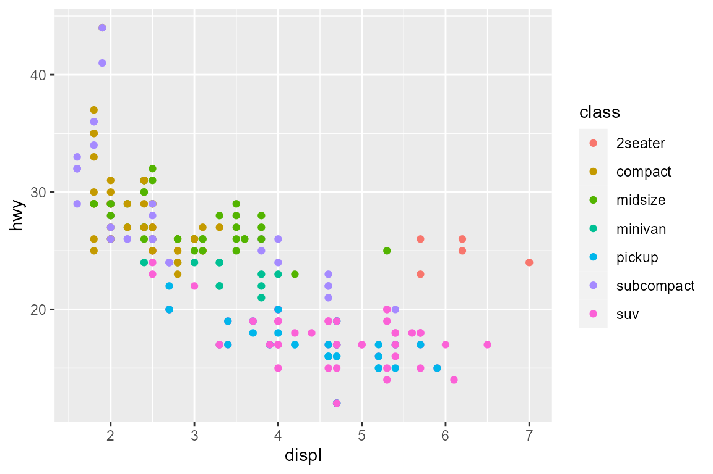

RCC grafiska skalor - en kort introduktion
scales-intro-sv.RmdFör bakgrund till The Grammar of Graphics och R-paketet ggplot2, se https://ggplot2.tidyverse.org/
RCC grafiska skalor
scale_colour_rcc
Exempel på använding av standardskalan för estetiken färg (colour).

Använd RCC-skalan.


Som standardskalor i skript
Det kan vara smidigt att ange RCC-skalorna som standardskalor i början av ett analysskript.
library(ggplot2)
library(rccthemes)
theme_set(theme_minimal()) # ggplot2::theme_minimal, inte ett RCC-tema
scale_colour_discrete <- scale_colour_rcc
scale_fill_discrete <- scale_fill_rcc